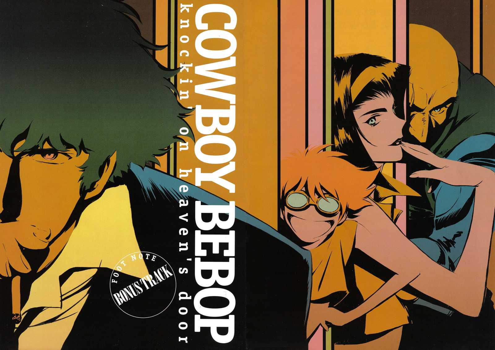
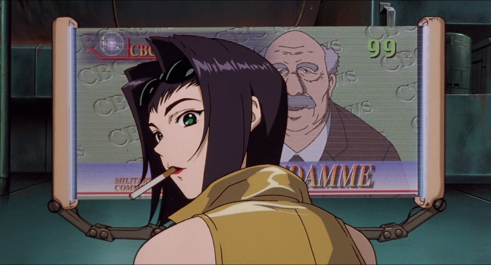
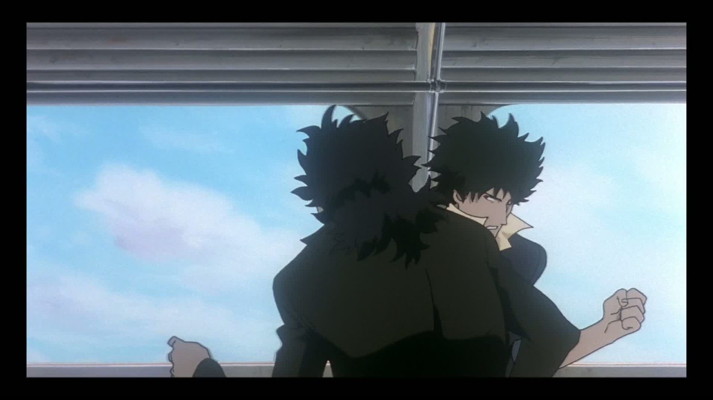
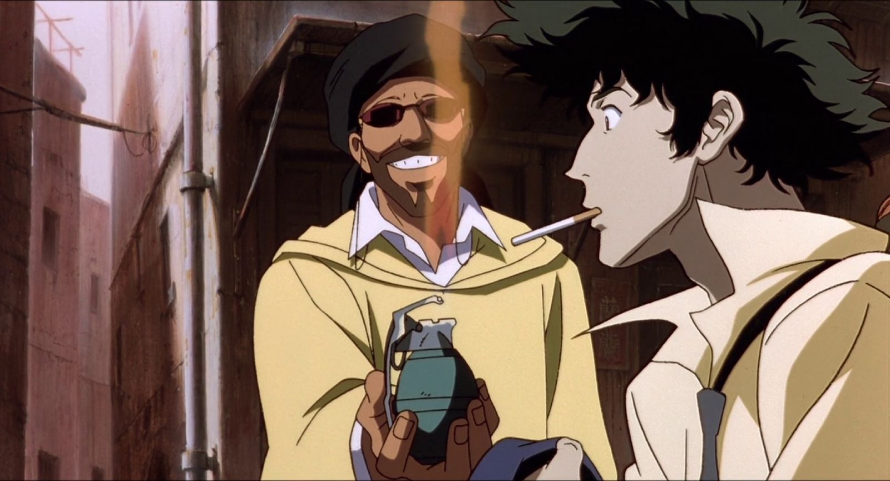

Cowboy Bebop: Knockin' on Heaven's Door
Sinopsis
"Cowboy Bebop: Knockin' on Heaven's Door," también conocida como "Cowboy Bebop: El Efecto de Knockin' on Heaven's Door," es una película de animación japonesa basada en la exitosa serie de televisión "Cowboy Bebop." La película se sitúa cronológicamente entre los episodios 22 y 23 de la serie y ofrece una emocionante historia independiente.
La trama sigue a los cazarrecompensas Spike, Jet, Faye, Ed y Ein mientras persiguen a un peligroso criminal que amenaza la ciudad de Marte con un virus mortal. A medida que la tripulación del Bebop se acerca a su presa, descubren una conspiración mucho más grande que pone en peligro a toda la ciudad.
Impacto
"Knockin' on Heaven's Door" es ampliamente considerada como una de las películas de anime más destacadas. Combina la acción y el estilo característicos de la serie con una narrativa cautivadora y un impresionante diseño de animación. La película captura la esencia del mundo de "Cowboy Bebop" y ofrece a los fanáticos una experiencia cinematográfica inolvidable.
Legado
La película ha ganado numerosos premios y ha sido elogiada por su música, escritura y personajes. Ha contribuido significativamente al crecimiento de la popularidad de "Cowboy Bebop" en todo el mundo y ha atraído tanto a fanáticos de la serie como a nuevos espectadores. La icónica banda sonora, compuesta por Yoko Kanno, ha dejado una impresión duradera en la industria del anime.
Conclusión
"Cowboy Bebop: Knockin' on Heaven's Door" es una película que captura perfectamente la esencia de la serie original. Ofrece una emocionante historia, personajes memorables y una animación de alta calidad que la convierten en una joya del anime. Tanto los fanáticos acérrimos como los recién llegados pueden disfrutar de esta película independientemente de si han visto la serie de televisión.